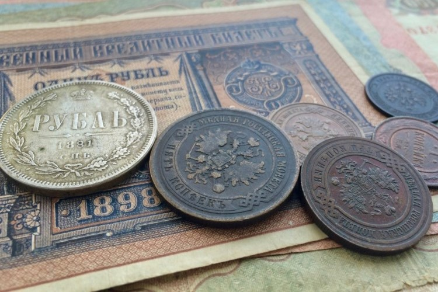

Экономика
В начале XX века Российская империя занимала одно из первых положений в мировом сельском хозяйстве. Например, валовый сбор зерна в 1913 году пяти основных культур составил около 85 млн тонн. Большая его часть шла на экспорт. Также Россия занимала 1-е место по производству и экспорту сливочного масла (экспортировано 77576 тонн).
Крымская война показала правительству неэффективность гужевого транспорта. Начинается интенсивное строительство железных дорог. Перед началом первой мировой Россия выходит на второе место в мире, однако этого не достаточно: на 100 км² приходится в среднем 1,1 км, кроме того, три четверти российских дорог были одноколейными. Не хватает стратегически важных дорог: на 1914 год железная дорога могла подвозить к границе 211 поездов в сутки, а противник 530. Например, Архангельск был связан с центральными областями устаревшими узкоколейными дорогами, а Мурманск и этого не имел.
Доля России в мировой промышленности составляла в 1913 году 5,3 %. В 1910 году потребление угля на душу населения составляло 4 % от потребления в США, а стали 6,25 %. По валовому промышленному производству на 1913 год — 6,521 млрд рублей (5,3 % от общемирового) — Россия занимала пятое место после Франции, Германии, США и Британской империи, совместно обеспечивавших 71,9 % мирового промышленного производства. Вклад Российской империи в мировое промышленное производство (5,3 %) был меньше доли населения Российской империи в населении мира (10,2 %).
В то же время Российская империя не относилась к мировым лидерам по размеру ВВП на душу населения. По современному обзорному исследованию, ВВП на душу населения, исчисленный в международных долларах Геари-Хамиса 1990 года, в Российской империи в 1913 году составлял 1488 долларов на человека при среднемировом значении 1524 доллара, что было ниже уровня всех европейских стран, кроме Португалии, и приблизительно соответствовало уровню Японии и среднему уровню Латинской Америки. ВВП на душу населения был в 3,5 раза ниже, чем в США, в 3,3 раза ниже, чем в Англии, в 1,7 раза ниже, чем в Италии.
Финансы
Пётр I основывает регулярную армию и много тратит на строительство флота, что вынуждает его постоянно искать источники обложения. Эксплуатируется госмонополия на чеканку монеты, соль, табак, дёготь, щетину, сало, и т. д. Введены новые сборы: гербовый, драгунский, на постройку судов. В результате роста недоимок поднимается подушный оклад. Общий сбор прямых налогов в итоге увеличился с 1,8 млн руб. до 4,6 млн руб. Наиболее характерными чертами созданной системы было то, что основная тяжесть пришлась на крестьян, а две трети всех расходов были военными. В 1705 году военные расходы поглощают даже 96 % бюджета. Для заведования государственными финансами Пётр учредил, по шведскому образцу, три коллегии — Камер-коллегия ведала доходами, Штатс-контор-коллегия расходами, а Ревизион-коллегия занималась проверками.
Вензель Екатерины II на пятаке 1765 г.
Екатерина II предпринимает ряд попыток навести порядок в государственных финансах, однако эти попытки сводятся на нет чередой дорогостоящих войн, ростом госаппарата и расходов на двор. Увеличиваются многие налоги, нарастает выпуск ассигнаций, начинаются заметные внешние и внутренние заимствования. В конце её правления курс бумажного рубля составлял 68 с половиной копеек от металлического (серебряного), к 1802 году повысился до 80 коп. Начавшаяся с 1805 года огромная эмиссия бумажных денег обесценила бумажный рубль до 20 коп. металлического, чему особенно содействовала активная борьба с Наполеоном. Такое падение курса произвело огромное впечатление на государство; началась политика сокращения расходов, а с 1817 года начиналось даже уничтожение части ассигнаций, количество которых к 1823 году уменьшилось с 826 до 596 миллионов. Оставшиеся бумажные деньги в 1843 году были девальвированы, и превращены в кредитные билеты.
В 1857 году валовой продукт Российской Империи составлял 200 488 079 рублей серебром. Особенностью финансовой системы дореформенной Российской империи была секретность госбюджета (государственной росписи доходов и расходов). Вплоть до 1862 года госбюджет утверждался лично императором, и нигде не публиковался. Характерным было то, что в 1850 году Николай I приказал скрыть бюджетный дефицит в 33,5 млн руб. от Государственного совета, и указал министерству финансов записать в расходах на 38 млн меньше. Таким образом, в 1850 году параллельно существовали два госбюджета — настоящий, и сфальсифицированный. Одним из источников чрезвычайного финансирования были казённые кредитные учреждения, фактически по приказу правительства выдававшие ему любые суммы.
Финансовая реформа Александра II с 1862 года снимает секретность с госбюджета, c 1864 года вводит государственный контроль («контрольные палаты»), отчёты которого с 1866 года становятся публичными. Вводится единый для всех ведомств госбюджет, с едиными остатками и единой кассой — кассой министерства финансов. Также Александр II предпринимает ряд реформ налогов: отдача на откуп питейного сбора заменяется менее разорительным акцизом, подушная подать для мещан заменяется налогом с недвижимых имуществ, с 1880 года под давлением общества отменяется налог на соль. В 1887 году отменяется подушная подать. По итогам правления Александра II государственный долг увеличился в три раза, причём значительных средств потребовало основание особого железнодорожного фонда, и крестьянская реформа.

В последние годы XIX века политика протекционизма и экспорт хлеба вместе с увеличением доходов от государственных железных дорог и окончательным установлением государственной алкогольной (питейной) монополии приводит к заметному увеличению золотого запаса. В империи восстанавливается металлическое обращение с фиксированным курсом 1,5 руб. бумажными ассигнациями = 1 руб. золотом. На 1897 год выплаты по государственному долгу составляют 19,9 % государственных расходов.
Русско-японская война и революция 1905 года становятся сильным ударом по государственным финансам. Затраты на войну с Японией планировались в пределах 1 млрд руб., однако в реальности составили 2,3 млрд руб. Эти расходы были практически целиком профинансированы за счёт роста государственного долга с 6,6 до 8,7 млрд. Курс государственных ценных бумаг с фиксированной 4 % доходностью упали за 1904—1905 с 94 % номинала до 71 %, в декабре 1905 в правительстве рассматривался вопрос об отмене золотого обращения. Избежать этого удалось благодаря займу во Франции на 843 млн руб.
За период 1900—1913 гг. государственный доход увеличивается в два раза (с 1 736 700 000 до 3 431 200 000 руб.) при росте расходов только в 1,8 раз, что позволяет достигнуть устойчивого профицита бюджета. Значительными статьями дохода становятся доходы от казённых железных дорог и от винной монополии; если в 1900 году они обеспечивали 28,2 % обыкновенного бюджета (за вычетом чрезвычайного бюджета), то в 1913 году уже 50,1 %. Высокая доля доходов от винной монополии повлекла за собой обвинения в спаивании народа, и формировании «пьяного бюджета».
По состоянию на начало Первой мировой войны (1914) государственный золотой запас Российской империи был крупнейшим в мире, и оценивается в 1,695 млрд руб. при государственном долге 8,800 млрд руб. Всего с 1894 года золотой запас увеличился в два раза.
Коррупция
Развитие экономики Российской империи на всех этапах её развития сдерживала коррупция (в терминологии того времени — лихоимство, мздоимство). Есть исторический анекдот о том, что на вопрос бывшего соотечественника о том, что происходит в России, официальный историограф Н. М. Карамзин ответил: «Воруют»[110]. В качестве преступлений с середины XIX века рассматривались две формы коррупции — казнокрадство (присвоение бюджетных ассигнований) и взяточничество, которое, в свою очередь, различалось по тому, происходило ли получение неправомерных преимуществ за совершение законных действий («мздоимство») или незаконных действий («лихоимство»). Лоббирование частных интересов в ущерб общим (кумовство) и сращение высшего чиновничества с бизнесом не влекли правовых последствий и не всегда даже осознавались как злоупотребления.